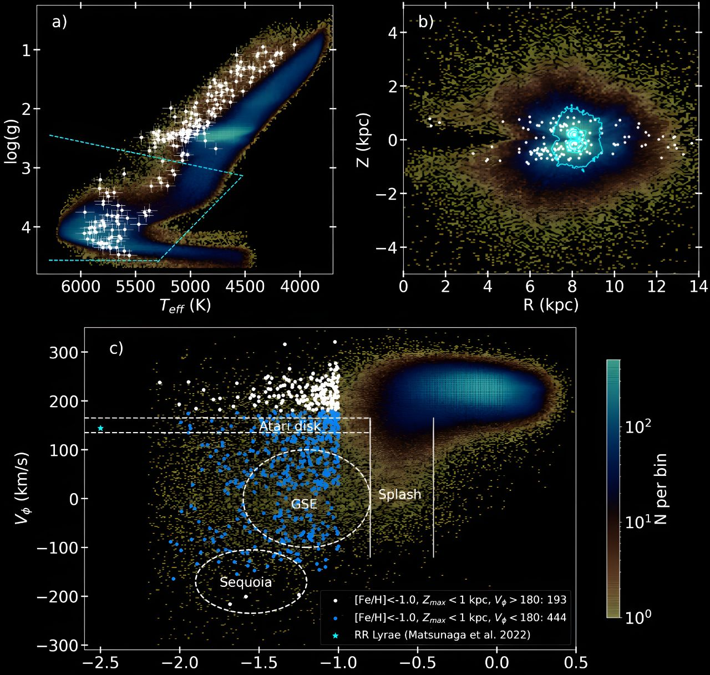
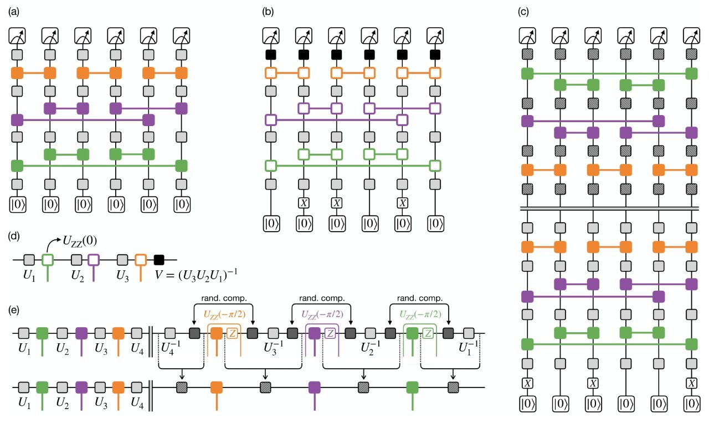
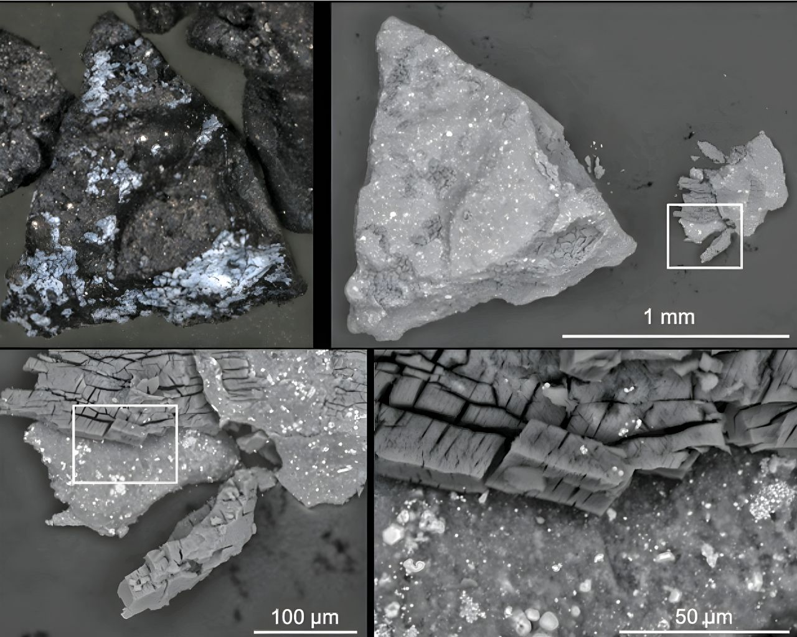

В нашем Telegram канале больше научных новостей, а также интересные обсуждения в комментариях, уважительная атмосфера общения.
09 Августа 2024
Ученые ЕКА полагают, что озеро существовало около 3,7 миллиардов лет назад и содержало достаточно воды, чтобы заполнить 3 Каспийских моря. А его площадь составляла примерно 1,1 миллионов квадратных километров.
Оно постепенно высыхало, превращаясь из гигантского водоема в серию озёр меньшего размера, прежде чем полностью исчезнуть вместе с большей частью остальной воды на Марсе.
07 Августа 2024
Ярчайшая звезда в Barba 2 - жёлтый сверхгигант. Помимо этой звезды, в скоплении было обнаружено 6 других сверхгигантов: 5 красных сверхгигантов и один синий сверхгигант. Таким образом, Барба 2 было классифицировано - как звёздное скопление, богатое сверхгигантами.
Сверхгиганты — одни из наиболее ярких, крупных и массивных звёзд, светимость которых может в миллионы раз превышать солнечную, а радиус — в тысячи раз. Эти звёзды занимают верхнюю часть диаграммы Герцшпрунга — Рассела и составляют класс светимости I. У них наблюдается сильный звёздный ветер, практически все они переменны.
Кроме того, наблюдения показали, что Barba 2 не демонстрирует значительных движений в плоскости нашей галактики, не расширяется, и не имеет значительного количество убегающих из него звёзд.
Барба 2 было впервые обнаружено 10 лет назад чилийским астрономом Рудольфо Барба. Он сканировал плоскость Млечного Пути с помощью многодиапазонной съёмки и искал звёздные скопления. В результате он обнаружил крупное скопление между шаровым скоплением NGC 3603 и областью ионизированного атомарного водорода - Gum 35, с семью яркими звёздами.
Однако Рудольфо Барба скончался в 2021 году, и результаты его исследований по обнаруженному скоплению так и не были опубликованы. Новое исследование предоставило результаты нового анализа его наблюдений, дополненные данными с космического телескопа Gaia, подтверждающими это открытие. А скопление было названо в честь этого учёного.
06 Августа 2024
04 Августа 2024
03 Августа 2024
Всего немецкой оптической компанией Schott, на июнь 2024 года, было произведено 949 сегментов. Затем сегменты были отправлены в оптическую компанию Safran Reosc во Франции для полировки с точностью до 10 нанометров, что составляет менее одной тысячной толщины человеческого волоса.
В дополнение к основному зеркалу - M1, есть ещё 3 основных зеркала. Диаметр вторичного зеркала M2 составляет 4,25 м. Свет собирается основным зеркалом и отражается на выпуклое вторичное зеркало, которое отражает свет на третичное зеркало M3, размером 3,7 м. M3 через отверстие в четвертом зеркале адаптивной оптики M4, размером 2,4 м, принимает свет отраженный от M3. Наконец, M4 перенаправляет свет на пятое зеркало, которое используется для инструментов фокусировки.
ELT обеспечит в 15 раз более четкие изображения, чем космический телескоп Хаббла. Он сможет совершить много неожиданных открытий. Через него учёные смогут видеть то, чего никогда ранее не наблюдал человек и наблюдать знакомые объекты с невиданным ранее уровнем детализации.
02 Августа 2024
01 Августа 2024

Телескоп Gaia обнаружил в нашей галактике большое количество древних звёзд на орбитах сходных с нашим Солнцем.
Телескоп Gaia обнаружил в нашей галактике большое количество древних звёзд на орбитах сходных с нашим Солнцем.
Наша галактика имеет в своей структуре: гало, центральный линзовидный балдж, бар - вытянутое уплотнение из звёзд и межзвездного газа, лежащее в плоскости диска, а также толстый и тонкий диски.
Большинство звёзд расположены именно в тонком диске и следуют упорядоченному вращению вокруг центра нашей галактики. Звёзды среднего возраста вроде нашего Солнца - примерно 5 миллиардов лет принадлежат к тонкому диску, который, как считалось ранее, начал формироваться около 8-10 миллиардов лет назад.
Известно, что звёзды с очень низкой металличностью являются старыми - одними из первых звёзд, сформировавшихся, когда Вселенная всё еще состояла в основном из водорода и гелия - до того, как более тяжелые элементы были созданы и распределены последующими поколениями звёзд.
Однако, древние звёзды нашей галактики демонстрируют широкий спектр состава металлов: некоторые из них очень бедны металлами, в то время как содержание металлов в других в 2 раза превышает металличность Солнца, что указывает на быстрое обогащение металлами на ранней стадии эволюции Млечного Пути.
Группа астрономов изучила звёзды в окрестностях Солнца на расстоянии около 3200 световых лет от нас. Учёные обнаружили удивительное количество очень старых звёзд на орбитах тонкого диска. Как оказалось, возраст большинства из них превышает 10 миллиардов лет, некоторые из них даже старше 13 миллиардов лет.
Это указывает на то, что тонкие холодные диски галактик могут формироваться и стабилизироваться на очень ранних этапах истории Вселенной, что позволяет вообще по-новому взглянуть на эволюцию галактик и эволюцию нашей галактики в частности.
30 Июля 2024
Учёные смоделировали гравитационные волны, которые мог бы излучать варп двигатель в случае его выхода из строя.
Коллапсирующий варп генерирует отчетливый всплеск гравитационных волн, который можно обнаружить с помощью детекторов гравитационных волн, которые обычно нацелены на слияние чёрных дыр и нейтронных звёзд.
В отличие от характерного сигнала слияния астрофизических объектов этот сигнал будет коротким высокочастотным всплеском, и потому современные детекторы, к сожалению, пока уловить его не в состоянии.
Однако в будущем такие высокочастотные приборы вполне могут быть созданы, поскольку технология для их создания уже существует. Это повысит возможность поиска доказательств существования технологии варп-двигателя, даже если мы пока не можем создать её сами.
Данное исследование углубляется в энергетическую динамику коллапсирующего варпа. В этом случае испускается волна отрицательной энергии, за которой следуют чередующиеся волны положительной и отрицательной энергии. Это приводит к увеличению общей энергии системы и может быть еще одним признаком коллапса.
Также учёные планируют рассчитать - как изменяется гравитационный сигнал при использовании различных моделей варп-двигателей, и исследовать схлопывание варп пузырей движущихся со скоростью, превышающей скорость света.
29 Июля 2024
Используя данные космического аппарата НАСА - MESSENGER, ученые определили, что под корой Меркурия может скрываться слой алмазов толщиной 16 километров.
Также среди этих загадок - пятна графита на поверхности планеты. Эти пятна заставили ученых предположить, что в ранней истории Меркурия его покрывал богатый углеродом океан магмы.
Меркурий образовался гораздо ближе к Солнцу, вероятно, из облака пыли, богатого углеродом. Как следствие, Меркурий содержит меньше кислорода и больше углерода, чем другие планеты.
Этот океан в последствии всплыл на поверхность, образовав графитовые пятна и сформировав тёмный оттенок поверхности планеты.
Это же процесс привёл к образованию богатой углеродом мантии под поверхностью. Учёные подсчитали, учитывая новую оценку давления на границе мантии и ядра, что богатый углеродом минерал, который образовался на границе мантии и ядра - это алмаз, а не графит.
Учёные, используя большой и мощный пресс чтобы воспроизвести такие же давления и температуры, провели эксперимент. Они произвели давление в более чем 7 Гигапаскалей на синтетический аналог материала, обнаруженного в мантии Меркурия, воссоздав температуру в 2177 градусов по Цельсию.
Это позволило им изучить, как минералы, подобные тем, которые были обнаружены в мантии Меркурия, изменялись в этих условиях. Они также использовали компьютерное моделирование для оценки данных о недрах Меркурия, которые дали им ключ к пониманию того, как могла образоваться алмазная мантия Меркурия.
28 Июля 2024
Учёные из Сколтеха и Университета Вупперталя в Германии под научным руководством вице-президента по фотонике Сколтеха Павлоса Лагудакиса, лауреата научной премии «Вызов», создали универсальный логический элемент NOR (от англ. NOT — оператор отрицания и OR — оператор логической суммы «или»).
Он разработан на основе поляритонных конденсатов, функционирует при комнатной температуре, имеет множественные входы, может работать в сотни раз быстрее электронных аналогов, а также является полностью оптическим — то есть работает без участия электрического тока.
Важно, что такие логические элементы можно воспроизводить и соединять в цепи, то есть каскадировать. Результаты работы представлены в журнале Nature Communications.
По словам исследователей, на базе нового вентиля NOR можно создать любые типы логических элементов, необходимых для оптических микросхем, и проводить вычисления без участия электрического тока. Результаты исследования приближают учёных к давней мечте о создании оптических компьютеров, которые смогут работать в сотни раз быстрее традиционных компьютеров на основе электронных технологий.
«Мы впервые на практике реализовали каскадируемый оптический универсальный логический вентиль, а значит, наши эксперименты открывают путь к созданию полностью оптического вычислителя. Дело в том, что современные компьютеры ограничены по частоте работы электронного процессора в несколько ГГц. С 80-х годов для увеличения скорости вычислений производители постоянно увеличивали тактовую частоту процессора, но затем столкнулись с принципиальным физическим ограничением — если поднимать частоту процессора выше нескольких ГГц, то процессор просто превращается в электрообогреватель. В 2019 году наша лаборатория первый в мире сверхбыстрый оптический поляритонный транзистор, который работает при комнатной температуре и является основным строительным блоком оптических поляритонных логических цепей. А в чём преимущество оптики? Прежде всего она не ограничена несколькими ГГц тактовой частоты. Мы можем работать с поляритонными транзисторами с частотой до 1 ТГц, что примерно в 300 раз быстрее электронных аналогов. В другой нашей работе мы , что для управления оптическим поляритонным транзистором достаточно одного фотона, что не может быть реализовано в любой другой оптической системе»,— рассказал первый автор работы Денис Санников, заместитель руководителя Лаборатории гибридной фотоники в Центре фотоники и фотонных технологий Сколтеха.
Логические элементы — или вентили — выполняют в устройстве различные логические операции — конъюнкцию, дизъюнкцию, отрицание и т.д. Процессор в компьютере состоит из миллиардов транзисторов, объединённых в эти логические элементы, которые при подаче какого-то входного сигнала, производят внутренние вычисления и выдают, например, изображение на экран. Логический вентиль принимает на каждый из своих входов сигнал с логическим уровнем «0» или «1», а на выходе возвращает сигнал «0» или «1» в соответствии с предварительно заданными правилами. Обычно электронные вентили имеют 2-8 входов и 1-2 выхода, но в экспериментах учёных Лаборатории гибридной фотоники Сколтеха новый оптический универсальный вентиль успешно справился с 12 входами — в этом ещё одно конкурентное преимущество разработки.
«Для создания универсального вентиля мы использовали особые свойства „жидкого света“ — так сейчас называют поляритонные конденсаты, способные усиливать слабые оптические сигналы в десятки тысяч раз. Чтобы создать такой „жидкий свет“, для начала мы должны сконденсировать поляритоны в основное состояние. Если проводить параллель, то это подобно водяному пару в воздухе, который превращается в воду на холодном стекле окна. Мы же пошли дальше и научились конденсировать поляритоны не только в основное состояние, но и в неосновное — состояние с большей энергией. Этот эффект позволил решить давнюю проблему полностью оптических, логических элементов, заключающуюся в отключении оптического сигнала с помощью света, делая из логической единицы ноль.
Фотоны, в отличие от электронов, не взаимодействуют друг с другом, и поэтому создание такого оптического логического преобразователя долгое время оставалось физическим и технологическим вызовом. Мы добились решения этой задачи благодаря использованию уникальных свойств „жидкого света“, объединяющего в себе свойства как фотонов, так и электронов, что позволило создать оптический поляритонный универсальный вентиль».
Исследование поддержано РНФ № 23-72-00059 «Оптические латеральные логические вентили на основе поляритонных конденсатов в перовскитных плёнках».
27 Июля 2024
Марсоход Perseverance обнаружил интересную породу, которая имеет некоторые признаки того, что в древности на ней могла существовать микробная жизнь.
Порода демонстрирует химические признаки и структуры, которые, возможно, могли быть сформированы жизнью миллиарды лет назад, когда в районе исследуемом марсоходом была проточная вода.
Многочисленные снимки водопада Шайава с помощью прибора марсохода, проводящего сканирование среды с помощью комбинационного рассеяния света и люминесценции на предмет наличия органики и химикатов, указывают на наличие органических соединений в этом месте. Однако, несмотря на то, что такие молекулы на основе углерода считаются строительными блоками жизни, они также могут образовываться и в результате небиологических процессов.
“Водопад Шайава - самая интересная и потенциально важная скала, которую когда-либо исследовал Perseverance”, - сказал Кен Фарли - научный сотрудник проекта Perseverance из Калифорнийского технологического института в Пасадене. “Мы впервые убедительно обнаружили органический материал - характерные цветные пятна, указывающие на химические реакции, которые микробная жизнь могла использовать в качестве источника энергии, и чёткие доказательства того, что вода, необходимая для жизни, когда-то проходила через эту породу."
По всей длине скалы проходят крупные белые прожилки сульфата кальция. Между этими прожилками расположены полосы материала, красноватый цвет которого предполагает присутствие гематита - одного из минералов, придающих Марсу характерный красновато-ржавый оттенок.
Когда марсоход Perseverance более внимательно изучил эти красные области, он обнаружил десятки грязновато-белых пятен неправильной формы, размером с миллиметр, каждое из которых окружено чёрным материалом. Прибор марсохода - PIXL определил, что эти чёрные ореолы содержат как железо, так и фосфаты.
Пятна такого типа на осадочных породах могут возникать, когда химические реакции с участием гематита превращают породу из красной в белую. Эти реакции также могут высвобождать железо и фосфат, возможно, вызывая образование чёрных ореолов. Реакции такого типа могут быть источником энергии для микробов.
Образцы собранных в этом месте материалов планируется отправить на Землю во время программы НАСА по отправке образцов грунта на Землю.
26 Июля 2024
25 Июля 2024
НАСА транслировала видеозапись в формате 4K с самолета на Международную космическую станцию и обратно с помощью лазерной связи.
Инженеры НАСА установили портативный лазерный терминал на брюхе самолета Pilatus PC-12. Затем они пролетели над озером Эри, отправляя данные с самолета на наземную оптическую станцию в Кливленде.
Оттуда они были отправлены по наземной сети в испытательный центр НАСА в Уайт-Сэндс в Лас-Крусесе, штат Нью-Мексико, где ученые использовали инфракрасный лазер для отправки данных на космический аппарат НАСА - Laser Communications Relay. А после переданы на на Международную космическую станцию. Затем данные проделали обратный путь.
После каждого лётного испытания команда учёных постоянно улучшает функциональность своей технологии. Такие испытания часто обнаруживают проблемы эффективнее, чем наземные испытания.
Учёные продолжат тестировать возможности потоковой передачи видео в формате 4K с самолета PC-12 до конца июля с целью разработки технологий, необходимых для трансляции возвращения человечества на поверхность Луны в рамках миссии Артемида.
Ранее НАСА полагалась на радиоволны для отправки информации в космос и из космоса. Лазерная связь использует инфракрасный свет для передачи в 10-100 раз большего объема данных чем радиочастотные системы.
23 Июля 2024

Новый квантовый компьютер в 100 раз побил предыдущий рекорд, ранее принадлежавший Google Sycamore.
Используя новый 56-кубитный компьютер H2-1, учёные из компании по квантовым вычислениям - Quantinuum провели серию экспериментов, чтобы оценить уровень производительности своей машины и качество используемых в ней кубитов, использовав хорошо известный алгоритм для измерения уровня шума и подверженности кубитов ошибкам.Новый квантовый компьютер в 100 раз побил предыдущий рекорд, ранее принадлежавший Google Sycamore.
Самая большая машина на сегодняшний день имеет 1000 кубитов. Кубиты подвержены ошибкам, поэтому для исправления этих ошибок их требуется так много. Вот почему многие учёные сейчас сосредоточены на создании более надежных кубитов, а не просто на увеличении их количества.
Предел при котором квантовые компьютеры обгонят классические известен как - квантовое превосходство, но для практического достижения этого рубежа при нынешнем уровне надёжности кубитов потребуется квантовый компьютер с миллионами кубитов. Разумеется, мало кого устраивает подобный подход в разработке квантовых компьютеров.
22 Июля 2024
Апофис, размером примерно 375 метров, пройдет на расстоянии 32 000 км от поверхности Земли 13 апреля 2029 года. В течение короткого времени он будет виден невооруженным глазом в ночном небе примерно 2 миллиардам человек во многих частях России и Европы. Астрономы исключили любую вероятность того, что астероид столкнется с нашей планетой в 2029 году.
Проанализировав размеры и орбиты всех пока известных астероидов, астрономы пришли к выводу, что объект такого размера приближается так близко к Земле только раз в 5000-10000 лет.
Рамзес должен стартовать в апреле 2028 года, чтобы обеспечить прибытие к Апофису в феврале 2029 года - за два месяца до его сближения с Землёй. Чтобы уложиться в этот срок ЕКА запросило разрешение как можно скорее начать подготовительные работы по миссии с использованием уже имеющихся ресурсов. Это разрешение было предоставлено советом программы космической безопасности.
Ученые предполагают, что приливные силы гравитации Земли изменят вращения астероида и, возможно, вызовут землетрясения и оползни на нём. Рамзес позволит получить подробное представление о том - как изменится Апофис в результате его близкого прохождения. Затем два дополнительных высокоэффективных космических аппарата позволят провести дополнительные научные исследования и измерить долгосрочные эффекты сближения астероида с Землёй.
22 Июля 2024
Из чего было сделано два вывода. IRS 13 взаимодействует со сверхмассивной чёрной дырой, что приводит к упорядоченному движению звёзд. При этом внутри скопления должно быть что-то, что позволяет ему сохранять наблюдаемую компактную форму.
Многодиапазонные наблюдения с помощью VLT, а также телескопов ALMA и Chandra показали, что причиной компактной формы IRS 13 может быть чёрная дыра средней массы, расположенная в центре звёздного скопления. Это подтверждается тем фактом, что астрономы смогли наблюдать характерное рентгеновское излучение и ионизированный газ, вращающийся со скоростью несколько сотен километров в секунду вокруг предполагаемого расположения чёрной дыры средней массы.
Еще одним признаком присутствия чёрной дыры средней массы является необычно высокая плотность звёздного скопления, которая выше плотности любого другого известного звёздного скопления в нашем галактике.
Теперь в планах астрономов наблюдения с помощью космического телескопа имени Джеймса Уэбба и Чрезвычайно большого телескопа, который в настоящее время пока ещё находится в стадии строительства. Это позволит детально исследовать происходящие внутри этого звёздного скопления процессы.
21 Июля 2024
20 Июля 2024
19 Июля 2024
18 Июля 2024
Аппарат оснащен топливным баком для сжиженного водорода, спроектированным и изготовленным самой компанией Joby. В него вмещается до 40 килограммов жидкого водорода. Он подается в систему топливных элементов, разработанную и изготовленную компанией H2FLY.
Электричество, вырабатываемое водородными топливными элементами, питает 6 электродвигателей, а небольшие аккумуляторы обеспечивают дополнительную мощность при вертикальном взлете и посадке, и являются страховкой безопасности для резервного питания двигателей.
17 Июля 2024
16 Июля 2024
Почему в этом году столько вспышек на Солнце?
15 Июля 2024
14 Июля 2024
В новой статье некоторые из таких учёных приводят аргумент в пользу нового определения планеты, которое включает в себя отсутствие ограничений со стороны нашей солнечной системы. Авторы статьи также утверждают, что и другие критерии в определении МАС слишком расплывчаты. Например требование того, что планета обязательно должна расчистить свою орбиту.
Кроме того учёные не согласны с тем, что планета обязательно должна быть сферичной. Авторы утверждают, что требование формы при наблюдении и регистрации планет практически невозможно реализовать, поскольку мы элементарно не сможем это увидеть, и оно фактически бесполезно для определения, хотя планеты, как правило, круглые.
В новом предлагаемом определении планета - это небесное тело, которое: вращается вокруг одной или нескольких звёзд, коричневых карликов или остатков звёзд и имеет массу более 10 в 23 степени килограмм и менее массивно чем 13 масс Юпитера, иначе это, вероятно, уже будет коричневый карлик. Такая привязка определения планеты к наиболее легко измеряемой величине - массе, по их мнению, устраняет противоречия - соответствует ли конкретный объект другим критериям.
Учёные надеются, что их работа положит начало обсуждению, которое приведет к улучшению определения.
Но как же быть с планетами изгоями и сиротами, кто защитит их права? Есть в этом какая-то несправедливость.
12 Июля 2024
Ученые использовали данные рентгеновского телескопа NICER на борту МКС, и смогли рассчитать радиус нейтронной звезды и её массу, а также нанесли на карту распределение температуры её магнитных полюсов. Также они сообщают, что их расчёты указывают на "более мягкое уравнение состояния", что подтверждает то, что максимальная масса нейтронных звезд должна быть ниже, чем предсказывают многие теории.
11 Июля 2024
Группа учёных обнаружила , что после завоевания Великобритании римлянами в 43 году нашей эры в этом регионе наблюдался бурный экономический рост.
Они отметили, что дома становились больше, и по мере того, как люди становились богаче, они стали более небрежно обращаться со своими монетами, в результате чего все больше их терялось в трещинах половиц.
По мере повышения уровня жизни росли качество и разнообразие керамики, используемой для приготовления и употребления пищи.
Экономический рост завоёванной Британии был очень интенсивный. Он значительно превосходил тот тип роста, который ожидался бы в регионе, если бы римляне не пришли туда со своими передовыми технологиями, развитием правовых отношений и правилами ведения дел.
Улучшенные дороги и морские порты значительно упростили транспортировку, а законы о бизнесе сделали работу безопаснее и повысили эффективность. Римляне также внедрили новые технологии: передовые методы фрезерования, производство бетона и новую культуру разведения животных.
Всё это привело к большему разнообразию потребительских товаров. Уровень жизни британцев серьёзно вырос.
10 Июля 2024
Версия A64, тяжёлая версия ракеты, будет оснащена четырьмя твердотопливными ускорителями, и будет применяться для вывода на орбиты крупных спутников научного и военного назначения, и различного рода космических аппаратов. Она будет способна вывести до 11,5 т на ГПО и 21,5 т на НОО.
На борту ракеты находятся девять малых спутников, предоставленных европейскими компаниями и исследовательскими институтами. Также ракета несёт две капсулы, которые, как ожидается, вернутся на Землю. Кроме того, на Землю должен вернуться разгонный блок ракеты-носителя, который в дальнейшем утилизируют.
09 Июля 2024
Оценки, основанные на наблюдениях при помощи космического телескопа имени Джеймса Вебба, показывают, что LHS 1140 b чуть менее плотная, чем ожидалось для скалистой планеты с составом аналогичным земному. Предполагается, что от 10 до 20% ее массы может состоять из воды. Наиболее вероятно, что она напоминает покрытую льдами планету с потенциально жидким океаном в той части поверхности планеты, которая всегда обращена к её звезде.
Анализ её атмосферы, показывает, что она богата азотом и потенциально аналогична атмосфере Земли, которая на 78% состоит из азота. Хотя это всё еще только предварительный результат исследования, но наличие богатой азотом атмосферы уже сильно радует учёных. А температура поверхности в центре её океана может составлять вполне комфортные 20 градусов по Цельсию.
08 Июля 2024
Согласно последнему исследованию учёных возраст некоторых термитников возле реки Баффелс в Намакваленде, на юго-западе Африки, был оценен с помощью радиоуглеродного анализа в 34 000 лет.
После дождей безжизненные ландшафты Намакваленда превращаются в райский сад, способный удивить любого ботаника. Ведь на небольшой территории сосредоточено свыше 3,5 тысяч видов, среди которых большинство — это растения-суккуленты, способные месяцами и годами жить в условиях засухи. Это мировой рекорд, ведь подобного видового разнообразия растений, приспособленных к засухам, нет больше ни в одном другом пустынном регионе мира.
Некоторые из созданных термитами курганов Намакваленда имеют около 30 метров в поперечнике. А некоторые гнёзда термитов находятся на глубине в 3 метра под землей. Учёным потребовалось тщательно прокопать части некоторых курганов, чтобы взять образцы для исследований. Термиты при этом перешли в авральный режим и начали восстанавливать отверстия, и разрушенные участки курганов. При этом учёные заверяют, что реконструировали термитники дабы уберечь термитов от хищников вроде трубкозубых жуков.
Данное исследование также позволит учёным заглянуть в доисторический климат Намакваленда, который был гораздо более влажным местом, когда возводились эти курганы, поскольку термиты являются экспертами по улавливанию и заохоронению углерода, собирая сучья и прочую сухую древесину и утаскивая их глубоко под землю. А учёным произвести, в том числе и по его анализу, исследования древней флоры и климатических изменений за эти тысячелетия.
07 Июля 2024
В 2021 году группа астрономов во главе с Андреасом Риттером и Квентином Паркером из Университета Гонконга объявила об открытии вероятного кандидата. Оказалось, что это чрезвычайно горячая звезда Вольфа-Райе, находящеяся на расстоянии, примерно, 7500 световых лет от нас, которая окружена газовой туманностью шириной, примерно, 3 световых года и расширяющейся со скоростью 1100 километров в секунду.
Выяснилось, что она возникла в результате столкновения двух белых карликов, что привело к возникновению довольно редкого типа сверхновой - Iax. Часто суммарная масса слившихся белых карликов превышает предел Чандрасекара - максимально возможную массу белого карлика - равную примерно полутора солнечным массам. Считается, что в таком случае может произойти термоядерный взрыв, а звезда может полностью разрушиться.
Но существует ряд моделей, согласно которым слияние массивных белых карликов может не приводить к термоядерному взрыву. Слившись, они превращаются на несколько тысяч лет в довольно холодную звезду, чья температура равна нескольким тысячам градусов. Вещество, которое она теряет за это время, образует вокруг звезды туманность. Затем в течение примерно 10 000 лет звезда сжимается. При этом её температура возрастает до сотен тысяч градусов. Также увеличиваются скорость её вращения и сила магнитного поля. Сжатие завершается взрывом, после чего в центре события остается нейтронная звезда.
Из-за своей редкой природы и относительно близкого расположения в нашей галактике SN 1181 стала предметом многочисленных наблюдений и исследований. В новом исследовании группа учёных проанализировала последние рентгеновские наблюдательные данные для того, чтобы построить компьютерную модель ради воссоздания ранее непонятной структуры остатка этой сверхновой.
Основная проблема заключалась в том, что в результате этого слияния остался белый карлик. При этом ожидалось, что вращающийся белый карлик был должен создать мощный звездный ветер сразу после своего образования. Однако учёные обнаружили нечто иное - ветер начал дуть совсем недавно - в течение последних 20–30 лет. Они предположили, что это может указывать на то, что белый карлик снова начал гореть, возможно, из-за того, что часть вещества, выброшенного в результате взрыва наблюдаемого в 1181 году, упала обратно на его поверхность, увеличивая его плотность и температуру сверх порогового значения, что привело к возобновлению его горения.
Чтобы проверить свою компьютерную модель, научная группа готовится к дальнейшему наблюдению SN 1181 при помощи радиотелескопа Very Large Array.
05 Июля 2024
Возможно идея Юрия Мильнера и Стивена Хокинга об отправке нанозондов к Проксиме Кентавра стала на шаг ближе к реализации.
Основные проблемы реализации этой идеи: 1) разгонять надо быстро, иначе зонды выйдут из области малого рассеяния лазерного луча, 2) пока не создана пленка с такой отражающей способностью, 3) создать такие лазеры очень дорого, 4) ускорение просто порвёт парус за счёт массы зонда. И это только очень явные проблемы.
Но, что если существовала бы возможность создать стабильный пучок света, который бы не рассеивался на очень большом расстоянии? Тогда бы и лазеры можно было использовать менее мощные и разгонять зонды медленнее - без такого сильного ускорения. Фантастика? Оказывается нет.
Чтобы решить эту проблему, Кристофер Лимбах - профессор Мичиганского университета, США работает над новым типом лучевого движетеля, который использует, как пучок частиц, так и лазер для преодоления самого большого недостатка этой технологии.
Расчеты, проведенные им и его коллегой - доктором Кеном Харой, показали, что создание когерентного пучка из частиц и света, который может достигнуть Проксимы Кентавра с рассеянием лишь на 10 метров, вполне осуществимо.
Чего уж говорить о рассеянии на небольшой области разгона, при которой такие зонды можно будет разгонять с относительно небольшим ускорением даже до 10% скорости света, что позволит ему достичь Проксимы Кентавра за 43 года. Они также подсчитали, что даже довольно крупный зонд - весом около 1 кг может достичь этой системы примерно за 57 лет.
03 Июля 2024
Где находятся самые подходящие для размещения будущих космонавтов марсианские пещеры и как их обустроить?
В этом исследовании было изучено несколько мест на Марсе, в которых имеются лавовые пещеры и лавовые трубы, наиболее подходящие для первых марсианских поселений, включая потухший вулкан - Арсиа Монс, а также несколько других мест, где были обнаружены входы в пещеры: долина Гебрус, вулкан Павонис, гора Аскрей и множество прочих потенциально интересных для изучения в рамках этого исследования мест.
Также в этом докладе рассматривается то, что лавовые каналы, гроты или трубки рядом с источниками водяного льда окажутся очень полезными для будущих космонавтов, что может значительно снизить затраты на доставку и хранение воды. В докладе отмечается, что лучшим вариантом была бы лавовая труба с прочными стенами, найденная рядом с мощными ледниковыми структурами.
Кроме того там рассматривается, что колония, скорее всего, будет иметь вид отдельных помещений с жилыми, инженерными, лифтовыми и оранжерейными отсеками. И они должны быть соединены друг с другом небольшими переходными туннелями, чтобы безопасно выравнивать давление и состав искусственно созданной в них атмосферы.
02 Июля 2024
Интересно, что на фотографии можно распознать отдельные структуры МКС, включая её солнечные панели и пристыкованные модули. На снимке также очень подробно видны струи газа во внешней атмосфере Солнца и большое солнечное пятно, а также несколько солнечных протуберанцев вокруг края Солнца.
01 Июля 2024

Понемногу начинают появляться подробности об исследовании грунта добытого с астероида Бенну, возраст которого оценивается, примерно, в 4,5 миллиарда лет.
В сентябре прошлого года, после семилетнего путешествия, миссия НАСА - OSIRIS-REX успешно вернула образцы грунта с астероида Бенну, после чего образцы были отправлены в исследовательские лаборатории по всему миру. Одно из исследований уже раскрыло первые результаты анализа образцов. А в результатах есть довольно интересные нюансы.Понемногу начинают появляться подробности об исследовании грунта добытого с астероида Бенну, возраст которого оценивается, примерно, в 4,5 миллиарда лет.
Образцы состоят, в основном, из тёмных частиц размером от микроскопических до 3,5 см в длину. Но среди них оказались и более светлые частицы, а также некоторые ещё более светлые крупные фрагменты с прожилками и более твёрдой внешней поверхностью.
Анализ образцов, помимо прочего, выявил наличие гидратированных филлосиликатов, которые образуются в присутствии жидкой воды, а также много углерода. Это означает, что астероиды, подобные этому, возможно, сыграли ключевую роль в доставке воды и строительных блоков жизни на Землю, считают учёные проводившие это исследование. Также там были обнаружены фосфаты магния и натрия, что еще раз наводит на мысль, что, возможно, образование минералов астероида происходило в присутствии жидкой воды.
В образцах также обнаружены, так называемые, "досолнечные зерна" - гранулы из вещества сформировавшегося еще до возникновения нашей Солнечной системы, которое может пролить свет на подробную биографию жизни древних звёзд, из вещества которых образовалась наша система.\
29 Июня 2024

Оказалось, что 6 обнаруженных ими новых кратеров нашлись буквально недалеко от места посадки InSight. 2 события, которые они идентифицировали на основе полученных данных, были двумя крупнейшими событиями, из когда-либо обнаруженных учёными.
Даже спустя десятилетия наблюдений с орбиты - столкновения, каждое из которых оставляет кратер размером примерно с футбольное поле, произошли с интервалом всего в 97 дней, что подчеркивает более высокую частоту подобных событий. Учёные ожидали, что столкновения такого масштаба происходят примерно раз в пару десятилетий, но обнаружили 2 из них - разница между которыми составляет чуть более 90 дней.
Команда учёных подтвердила, что 8 из этих событий привели к появлению свежих кратеров, изучив орбитальные снимки до и после этих событий. Этот двойной подход с использованием сейсмических данных и орбитальных снимков позволил им подтвердить, что сейсмические сигналы были вызваны именно ударами метеороидов и перепроверить свои выводы для обеспечения точности.
Следующие шаги этой научной группы направлены на проведение более детального орбитального поиска при помощи методов машинного обучения. Но пока выводы таковы, что подобные события происходят до 10ти раз чаще чем предполагалось ранее, что ставит под угрозу будущие программы пилотируемых полётов на Марс и создания там небольших обитаемых баз.
28 Июня 2024

НАСА инвестирует 2 миллиона долларов в проект по выращиванию материала на основе грибного мицелия для строительства баз на Луне и Марсе.
Благодаря этой разработке космонавты смогут путешествовать с компактной средой обитания, построенной из легкого материала, но содержащего "спящие" грибы. При добавлении воды мицелий грибов прорастёт вокруг и внутри этой структуры в полностью герметичное, безопасное и функциональное жилище для человека.
В подтверждение концепции проекта ранее уже был продемонстрирован материал созданный по этой технологии. Команда учёных создала множество комбинаций биокомпозитов на основе грибов, протестировала материалы в планетарном симуляторе, продемонстрировала радиационную защиту, и разработала подробный проект для лунной среды обитания на основе мицелия грибов.
Этот проект может также найти применение для строительства на Земле. А также мицелий можно использовать для фильтрации воды и в системах извлекающих полезные для промышленности и сельского хозяйства минералы из сточных вод.
Проект уже переходит во вторую фазу своего развития. Третья фаза будет заключаться, в том числе, и в тестировании этой технологии на околоземной орбите.
27 Июня 2024

Методика исследования гравитационных волн помогла понять функционирование Антикитерского механизма.
Десятилетия последующих исследований и анализа установили, что механизм датируется вторым веком до нашей эры и функционировал как механический компьютер. Внешние циферблаты соединенные с внутренними шестернями позволяли предсказывать затмения и вычислять астрономические положения планет на любую заданную дату с точностью несравнимой ни с одним другим известным современным устройством.
В 2020 году рентгеновские снимки одного из календарных колец механизма выявили равномерно расположенные отверстия находящиеся под этим кольцом. Однако, поскольку кольцо было разломано и части его были утеряны, было неясно сколько отверстий там было изначально. Первоначальный анализ, проведенный учёными, предположил, что их там было от 347ми до 367ми.
Профессор Грэм Воан из факультета физики и астрономии Университета Глазго использовал байесовский анализ, который использует вероятность для количественной оценки неопределенности на основе неполных данных, чтобы вычислить вероятное количество отверстий в механизме, используя положения сохранившихся отверстий и размещение шести сохранившихся фрагментов кольца. Его результаты показали убедительные доказательства того, что календарное кольцо механизма содержало либо 354, либо 355 отверстий.
В то же время один из его знакомых по Университету - доктор Джозеф Бейли также узнал об этой проблеме. Он адаптировал методы, используемые их исследовательской группой для анализа сигналов полученных детекторами гравитационных волн LIGO, которые измеряют рябь в пространстве-времени вызванную слиянием чёрных дыр и нейтронных звёзд, для тщательного изучения календарного кольца.
В результате Воан и Бейли предоставили полный вероятностный набор результатов расчётов указывающий на то, что кольцо содержало 354 или 355 отверстий по окружности радиусом 77,1 мм с погрешностью около 1/3 мм. Это также показало, что отверстия были расположены с необычайной точностью - со средним радиальным отклонением всего 0,028 мм между каждым отверстием.
"Мы адаптировали методы, которые используем для изучения Вселенной сегодня, чтобы лучше понять механизм, который помогал людям следить за небесами почти два тысячелетия назад", - отметил Грэм Воан.
26 Июня 2024


Крупная комета врезалась в атмосферу Земли, раздробившись на мелкие фрагменты, 12 800 лет назад.
Профессор Калифорнийского университета Джеймс Кеннетт и его коллеги сообщили об обнаружении её остатков, распределенных по нескольким отдельным регионам на востоке Соединенных Штатов: Нью-Джерси, Мэриленд и Южная Каролина. Они указывают на время, силу и температуру события. Были обнаружены: платина, металлические микросферы, расплавленное стекло и кварц с ударным разрушением.
"Мы обнаружили, что давление и температура не были характерны для прямых крупных кратерообразующих столкновений с поверхностью Земли, но они соответствуют воздушным взрывам, которые не образуют много кратеров", - заявляет Кеннетт.
Слой отложений связанный с выбросом в атмосферу материала от этого события простирается по большей части северного полушария, но также может быть найден в местах к югу от экватора. Этот слой содержит необычно высокие уровни редких материалов: иридий и платина, а также материалы, образовавшиеся при высоких давлениях и температурах, такие как магнитные микросферы - застывшие металлические капли, расплавленное стекло и наноалмазы.
Ученых также особенно заинтересовало наличие характерного ударного кварца, который мог образоваться только при таком событии.
25 Июня 2024
24 Июня 2024

Гипотеза о циклической Вселенной получила наблюдательную поддержку.
Это важнейшее открытие последнего десятилетия, потому что наногерцовые реликтовые гравитационные волны являются аналогами реликтового микроволнового излучения. Как открытие фонового теплового излучения в 1965 году стало доказательством горячей Вселенной и Большого взрыва, так и обнаружение наногерцовых гравитационных волн прямо свидетельствует в пользу модели циклической Вселенной, в которой черные дыры играют ключевую роль.
Подробнее об этом можно узнать в свежей, весьма обширной, статье Николая Горькавого.
23 Июня 2024
НАСА сообщило, что возвращение Boeing Starliner на Землю с МКС, которое было запланировано на 26 июня, снова отложено.
НАСА заявило, что МКС хорошо снабжена припасами и "расписание станции относительно открыто до середины августа", а задержка возвращения даст больше времени для изучения неисправностей двигателей и утечки гелия.
22 Июня 2024
Проект самого быстрого, в настоящее время, космического корабля, использующего гравитационный маневр вокруг Солнца.
Разумеется, одного теплозащитного экрана недостаточно для полного достижения этого эффекта — космический корабль должен иметь двигательную установку способную выдерживать такие температуры. И он также в разработке. Двигатель будет использовать энергию излучения Солнца для повышения давления рабочего тела в расширительной камере, а затем под давлением выбрасывать это рабочее тело - для создания реактивной тяги.
В качестве рабочего тела был предложен метан. Хотя он не так эффективен - как гидрид лития, но сможет разогнать корабль до преодоления 10 астрономических единиц в год. Водород ещё более эффективен, но хранение жидкого водорода при таких высоких температурах представляется совсем уж нереальной задачей.
Проект был удостоен гранта от НАСА первой фазы в 2022 году. Но НАСА, пока, не выбрало этот проект для перехода ко второй фазе.
21 Июня 2024


НАСА объявило, что Boeing Starliner совершит посадку с людьми не ранее 26 июня - почти через три недели после запуска.
Оценка их состояния продолжается. Недавно члены наземной команды Boeing и НАСА совместно с астронавтами на МКС провели испытание двигателей их запуском. Один двигатель не сработал во время испытания из-за аномально низкого давления, и он останется отключенным во время возвращения космического корабля на Землю.
Производительность большинства двигателей хорошая и приближается к номинальной, а утечки гелия стабилизировались и уменьшились. Инженеры на Земле и астронавты в космосе работают над тем, чтобы узнать больше о проблемах корабля, пока сервисный модуль, обеспечивающий большую часть топлива и энергии космического корабля все ещё прикреплен к космическому кораблю, поскольку он будет уничтожен во время посадки.
20 Июня 2024


Цикады-зомби неистово предаются спариванию под воздействие грибов-паразитов. Локальный зомби-апокалипсис среди периодических цикад.
Взрослые периодические цикады живут только несколько недель — до середины июля. Их недолговечность во взрослом состоянии объясняется одной целью их взрослой жизни — размножением. Самки отвечают на вызовы самцов периодическими щелчками крыльев, привлекающими самцов для спаривания. А звуки групп самцов — могут достигать 100 децибел.
Личинки периодических цикад живут под землёй, на глубине от 30 и более сантиметров, питаясь соками корней растений. Перед строительством туннеля, для выхода на поверхность весной 13-го или 17-го года своей жизни, они превращаются в нимф. Существует гипотеза, что период появления большого количества цикад раз в 13 или раз в 17 лет является частью стратегии, уменьшающей возможность стать добычей потенциальных хищников, ожидающих появление насекомых. Они их просто не дожидаются.
Однако, цикады с выпученными красными глазами издающие призывные звуки могут показаться странными и даже пугающими. Оказывается, Massospora cicadina - единственный гриб на Земле, который вырабатывает амфетамин в организме этих насекомых, берёт под контроль поведение цикад. Он делает их "гиперсексуальными", используя попытки спаривания цикад для своего распространения.
У этого гриба один из самых больших геномов среди всех известных грибов. У него около полутора миллиардов пар оснований, что примерно в 30 раз больше, чем у многих известных науке грибов. Пара оснований - это 2 азотистых основания в составе нуклеотидов - соединений ДНК и РНК.
Данный гриб-паразит заражает нижние части цикад, удаляя гениталии и заменяя их белой и клейкой, но при этом шелушащейся пробкоподобной субстанцией, из которой в последствии выпадают споры гриба. Этот гриб не относится к тому типу паразитов, которые убивают своего хозяина, вместо этого он наоборот до последнего поддерживает его жизнь. Затем зараженные цикады пытаются спариваться с другими, распространяя споры гриба. Самцы в своем "гиперсексуальном" состоянии даже притворяются самками, чтобы заманить и заразить других самцов.
В последствии зомбирующее воздействие гриба приводит к тому, что самцы пытаются "спариваться" со всем - с чем сталкиваются на пути, а затем у них постепенно отваливаются нижние конечности. А самки после заражения паразитом спариваются с незаражёнными самцами и откладывают заражённые грибом яйца. В последствии гриб медленно распространяется личинками долгие годы.
Профессор микологии Университета Западной Вирджинии Мэтт Кассон и его небольшая команда собрали 36 заражённых цикад во время своей короткой работы в поле, а также ему прислали еще около 200 особей. В данный момент он ожидает подробные результаты генетического анализа гриба, включая подробный анализ РНК, необходимый для продолжения исследования этого паразита.
19 Июня 2024
НЕОБЪЯСНИМЫЕ СИГНАЛЫ ИЗ КОСМОСА. Владимир Сурдин. Неземной подкаст.
18 Июня 2024

Астрономы в реальном времени наблюдают пробуждение сверхмассивной черной дыры.
Событие, когда звезда приближается слишком близко к чёрной дыре и разрывается приливными эффектами, может вызвать внезапное повышение яркости галактик. Но эти изменения яркости обычно длятся всего несколько десятков или, самое большее, несколько сотен дней. SDSS1335 + 0728 до сих пор увеличивает свою яркость после того, как было впервые замечено усиление яркости в 2019 году. Сравнивая данные, полученные до и после декабря 2019 года, учёные обнаружили, что SDSS1335 + 0728 излучает уже гораздо больше в ультрафиолетовом, оптическом и инфракрасном диапазонах волн. Галактика также начала излучать рентгеновские лучи в феврале 2024 года.
"Такое поведение галактики беспрецедентно", - заявляют астрономы.
17 Июня 2024
Что так разогнало звезду, которая летит по нашей галактике со скоростью 2,1 миллиона километров в час?
Чтобы раскрыть секреты этой сверхскоростной звезды профессор астрономии и астрофизики Калифорнийского университета в Сан-Диего Адам Бургассер начал её наблюдения в инфракрасном спектре. Оказалось, что звезда принадлежит к карликам класса L. К ним относятся холодные коричневые карлики с температурами от 1300 до 2500 K. Достаточно старые звёзды с массами менее 0,085 масс Солнца также могут принадлежать к классу L.
В первой гипотезе объясняющей сверхскоростную природу объекта J1249 + 36, Бургассер и его коллеги предположили гипотезу, что он когда-то был компаньоном белого карлика. Иногда белые карлики в двойных системах могут питаться звёздным материалом содранным с ближайшей звезды, объедая её почти до голого ядра. Бывает, что материал скапливается на белом карлике до тех пор, пока масса этого звёздного остатка не превысит предел Чандрасекара - примерно в 1,4 раза превышающий массу Солнца. Это приводит к взрыву сверхновой типа Ia", который полностью уничтожает белого карлика. А его компаньон высвобождается и улетает с той орбитальной скоростью, с которой он двигался изначально, плюс толчок от взрыва сверхновой. Однако этого белого карлика уже больше нет, а остатки взрыва, который, вероятно, произошёл несколько миллионов лет назад, уже рассеялись, поэтому у учёных нет убедительных доказательств того, что эта гипотеза верна.
Вторая гипотеза предполагает, что этот объект находился в центре шарового скопления, где часто скрываются множество чёрных дыр различной массы. Эти чёрные дыры могут образовывать двойные системы. А когда звезда сталкивается с двойной чёрной дырой, сложная динамика взаимодействия трёх тел может выбросить звезду даже из шарового скопления. Научная группа Бургассера проследила траекторию этой сверхскоростной звезды до чрезвычайно перенаселённой области космоса, которая может быть местоположением пока неоткрытого шарового скопления, а возможно даже нескольких таких скоплений.
Теперь научная группа изучает элементный состав J1249 + 36. Состав может указать на происхождение объекта. Когда белые карлики становятся сверхновыми они сильно загрязняют выбрасываемые звёзды. А звёзды, рожденные в шаровых скоплениях, имеют совсем иной химический состав. Но каким бы ни было происхождение этой звезды, ее открытие дает учёным уникальную возможность исследовать сверхскоростные звезды.
Бургассер представил результаты работы научной группы на пресс-конференции 10 июня во время 244-го национального собрания Американского астрономического общества.
16 Июня 2024

Учёные подтвердили, что квантовая запутанность сохраняется даже между t-кварками - самыми тяжёлыми из известных науке частицами.
Эксперимент группы физиков под руководством профессора физики Рочестерского университета - Регины Дёминой привёл к значительному результату в вопросах исследования квантовой запутанности. Будучи ещё аспиранткой, Дёмина была в команде, которая открыла топ-кварк в 1995 году. Также Дёмина возглавляла группу учёных, которые создали устройство слежения, сыгравшее ключевую роль в открытии бозона Хиггса в 2012 году.
Для получения топ-кварков и исследования их запутанности в данном эксперименте потребовались очень высокие энергии, доступные лишь на Большом адронном коллайдере. И в результате эксперимента было впервые обнаружено, что запутанность сохраняется между t-кварками и запутанными с ними анти t-кварками на расстоянии превышающем доступность информации, передаваемой со скоростью света. В частности, учёные наблюдали спиновую корреляцию между частицами.
Данные исследования, и подобные им могут пролить свет на то - как долго сохраняется запутанность, передаётся ли она дочерним частицам или их продуктам распада, и что в конечном итоге разрушает запутанность. Вселенная находилась в запутанном состоянии после начальной стадии быстрого расширения. А результат эксперимента, наблюдаемого Дёминой и её научной группой, может помочь понять, что привело к потере квантовой связи во вселенной.
15 Июня 2024

14 Июня 2024


Команда учёных надеется найти породы, отличные от тех, что встречаются в богатом карбонатом и оливином пограничном слое, и собрать больше сведений о геологической истории этого места.
Управляющая марсоходом команда использовала снимки из космоса для планирования поездок на расстояние около 30 метров за одну поездку. Чтобы продвинуться дальше за один марсианский день они полагались на автоматическую навигационную систему Perseverance - AutoNav. Но по мере того, как валунов и камней становилось все больше, AutoNav всё чаще определял маршрут неверно и останавливался для выбора другого маршрута. Однако команда учёных не теряла надежды, зная, что им, возможно, удастся преодолеть 400-метровое поле дюн через русло реки. И это им удалось. При этом учёным представилась ещё и отличная возможность исследовать процессы протекавшие в древних марсианских реках.
Целью путешествия была гора Уошберн - холм покрытый странными валунами, похожие на которые никогда ранее не наблюдались на Марсе. Пятнистый светлый валун шириной около 45 сантиметров и высотой около 35 сантиметров выделялся на фоне более тёмных валунов. Анализ проведенный приборами SuperCam и Mastcam-Z показал, что его порода состоит из пироксена и полевого шпата. Некоторые учёные предполагают, что минералы, из которых он состоит происходят из подповерхностного массива магмы, который, обнажился сейчас на краю исследуемого кратера Езеро. Другие предполагают, что валун образовался далеко за стенами кратера и был перенесен туда быстрыми марсианскими потоками воды.
12 Июня 2024

HM Sge это система из двух звёзд, в которой белый карлик и сильно раздутый, генерирующий много пыли красный гигант находятся на сильно вытянутой орбите, а белый карлик поглощает газ из его раздутой оболочки. Этот газ образует раскалённый аккреционный диск вокруг белого карлика, а затем падает на него и может привести к самопроизвольному термоядерному взрыву в результате его накопления на поверхности карлика, что наблюдается астрономами как взрыв новой звезды. Газовый мост, соединяющий красный гигант с белым карликом в настоящее время должен простираться примерно на 3,2 миллиарда километров.
Учёные использовали данные наблюдений Хаббла и SOFIA, от инфракрасных до ультрафиолетовых, чтобы узнать, что изменилось с HM Sge за последние 30 лет. Оказалось, что ультрафиолетовые данные, полученные Хабблом в 2021 году показали сильную линию излучения высокоионизированного магния, которой не было в ранее опубликованных спектрах 1990 года. А расчетная температура белого карлика и его аккреционного диска увеличилась с менее чем 400 000 градусов в 1989 году до более чем 450 000 градусов в настоящее время. А с помощью данных стратосферного телескопа SOFIA, который вышел из эксплуатации в 2022 году, команда учёных смогла обнаружить воду, газ и пыль в этой системе и вокруг нее. Данные инфракрасного наблюдения показали, что гигантская звезда, производящая большое количество пыли, в последние годы заметно потускнела, что является еще одной загадкой, требующей объяснений.
Команда ученых также работает с AAVSO - Американской ассоциацией наблюдателей переменных звезд - астрономами-любителями со всего мира, которые помогают следить в телескоп за HM Sge. Их постоянные наблюдения выявляют изменения, которых не было видно с момента вспышки 40 лет назад.
11 Июня 2024
Как появилась жизнь на Земле?
10 Июня 2024
Фотоловушке удалось заснять находящихся под угрозой исчезновения борнейских дымчатых леопардов – мать и двух котят.
Воспроизводство популяции является невероятно обнадеживающим признаком, поскольку у дымчатых леопардов низкий уровень пополнения. Очень мало взрослых особей производят и выращивают потомство, которое живет достаточно долго, чтобы присоединиться к размножающейся популяции в возрасте двух лет.
10 Июня 2024

{kind=link}
{kind=link}
{kind=link}
{kind=link}
{kind=link}
{kind=link}
{kind=link}
{kind=link}
{kind=link}
{kind=link}
{kind=link}
{kind=link}
{kind=link}
{kind=link}
{kind=link}
{kind=link}
{kind=link}
{kind=link}
{kind=link}
{kind=link}
{kind=link}
{kind=link}
{kind=link}
{kind=link}
{kind=link}
{kind=link}
{kind=link}
{kind=link}
{kind=link}
{kind=link}
{kind=link}
{kind=link}
{kind=link}
{kind=link}
{kind=link}
{kind=link}
{kind=link}
{kind=link}
{kind=link}
{kind=link}
{kind=link}
{kind=link}
{kind=link}
{kind=link}
{kind=link}
{kind=link}
{kind=link}
{kind=link}
{kind=link}
{kind=link}
{kind=link}
Ученые предполагают, что ледниковые периоды наступают по ряду причин, включая: наклон планеты, влияние тектоники плит, извержение вулканов и уровень углекислого газа в атмосфере. Но что, если подобные радикальные изменения являются результатом не только окружающей среды Земли, но и расположения Солнца в галактике? Многочисленные ледниковые периоды наступали и отступали до 12 000 лет назад. Кроме того, Земля регулярно подвергалась сильному воздействию губительных космических лучей, порой приводящему к значительному обеднению нашей биосферы. А это облако сжало гелиосферу таким образом, что на короткое время Земля и другие планеты солнечной системы оказались вне влияния гелиосферы, защищающей нас от галактических лучей.
Используя компьютерные модели, чтобы рассчитать положение Солнца 2 миллиона лет назад, а также состояние гелиосферы в солнечной системе, учёные нанесли на карту траекторию движения местной системы холодных межзвёздных облаков. И вычислили, что одно из этих облаков прошло через солнечную систему в это время. Это также согласуется с геологическими данными, которые показывают увеличение изотопов железа-60 и плутония-244 в океане, на Луне, антарктическом снеге и кернах льда за тот же период времени. Сроки также совпадают с температурными рекордами резкого похолодания.
Теперь Офер и её научная группа работают над тем, чтобы проследить - где находилось Солнце 7 миллионов лет назад и даже еще раньше. Точное определение местоположения Солнца миллионы лет назад, а также системы холодных облаков возможно с помощью данных, собранных миссией Gaia Европейского космического агентства, которая в настоящее время создает самую большую динамичную 3D-карту галактики, в которую заносится, в том числе, скорость движения звёзд и межзвёздных облаков.
09 Июня 2024
Астрономы, вероятно, обнаружили самую медленно вращающуюся активную нейтронную звезду. Для её полного оборота требуется почти час.
Молодые нейтронные звёзды обладают мощнейшими магнитными полями во вселенной, которые при быстром их вращении генерируют мощные потоки излучения, в том числе, и радиоволны, которые наблюдаются при помощи радиотелескопов. Однако по мере старения нейтронных звёзд их вращение замедляется, и они больше не могут генерировать радиоизлучение. Однако, ASKAP J1935 + 2148, впервые обнаруженная с помощью радиотелескопа ASKAP, расположенного в радиоастрономической обсерватории Мерчисон в Западной Австралии, вращается крайне медленно, что указывает на её преклонный возраст, но каким-то образом она всё еще излучает радиоволны.
Особо удивляет то, что этот объект демонстрирует три различных состояния излучения, каждое со своими свойствами - полностью отличающимися от других. 64 радиотелескопа MeerKAT в Южной Африке помогли в обнаружении этих состояний радиоизлучения. И если бы сигналы исходили не из одной и той же точки неба, учёные бы не поверили, что это один и тот же объект излучающий столь разные сигналы.
Однако, существует шанс, что объект ASKAP J1935 + 2148 на самом деле может быть белым карликом, но, при этом, чтобы генерировать сигналы такого типа, которые наблюдаются с помощью радиотелескопов ASKAP и MeerKAT, этот белый карлик должен обладать чрезвычайно сильным магнитным полем. А подобные объекты никогда не наблюдались в этой области космоса. И их радиоизлучение не соответствует таким типам излучения.
Потребуются дополнительные исследования, чтобы подтвердить истинную природу ASKAP J1935 + 2148 и определить, является ли этот объект белым карликом или нарушающей правила нейтронной звездой или, возможно даже, объектом искусственного происхождения.
На видео - анимация, а вовсе не ASKAP J1935 + 2148.
👆 Комментарий Владимира Георгиевича Сурдина:
"Это прорыв в наблюдательной астрономии. Уже несколько лет создается гигантская система радиотелескопов, которая одновременно будет базироваться в Австралии и Южной Африке, так называемый телескоп эффективной площади в один квадратный километр. На самом деле это много-много-много антенн, совместно наблюдающих какие-то космические объекты, источники радиоволн. Это очень здорово, что именно они впервые такой неожиданный сигнал зафиксировали, значит, деньги вложены не зря, это будет самый зоркий радиоастрономический инструмент.
Если бы период был покороче – секунды или в крайнем случае несколько минут, то однозначно это нейтронная звезда, то есть очень маленький объект, оставшийся после смерти нормальной массивной большой звезды. Нейтронные звезды очень быстро вращаются, имеют очень мощное магнитное поле и являются такими природными радиопередатчиками. Но период, равный приблизительно часу, мы не наблюдали до сих пор у нейтронных звезд и даже не ожидали, что такое возможно. И когда она делает один оборот в час, даже непонятно, как мы можем услышать такие слабые сигналы. Скорость вращения прямо связана с мощностью излучения. Это могла бы быть не нейтронная звезда, а более простой объект — белый карлик. Это тоже остаток эволюции звезды, но не очень крупный... Но белые карлики почти не излучают радиоволн. И теперь почти очевидно, что мы открыли новый тип космических объектов".
08 Июня 2024
{kind=link}
{kind=link}
Множественные неисправности сильно задержали стыковку Starliner с МКС, но ничего страшного не произошло, говорят официальные лица.
И это случилось после того, как диспетчеры НАСА нашли обходные пути решения проблемы нескольких утечек гелия на космическом корабле. Кроме того, в системе охлаждения оказалось слишком много воды и еще одна утечка гелия была обнаружена позже, уже после того, как Starliner пристыковался к космической станции.
Однако, специалисты НАСА и Boeing спешат успокоить общественность. По их словам, пилотируемый полёт Starliner к МКС является испытательным полетом. И он всего лишь 6ой, в ходе которого астронавты НАСА совершали полет на совершенно новом космическом корабле. Для Boeing после первого испытательного полета без экипажа к МКС в 2019 году, который состоялся также с рядом проблем и неисправностей, это уже гигантский скачёк вперед.
07 Июня 2024


Новое исследование, проведенное Лией Сигельман и её командой учёных из Института океанографии в Сан-Диего, показало, что циклоны в полярных регионах Юпитера вызваны такими же процессами, что и в океанах и в атмосфере Земли.
Сигельман увидела тонкие завитки в промежутках между газовыми вихрями. У них были земные аналоги, и последующее её исследование выявило дополнительное сходство между процессами подпитывающими циклоны на Юпитере и процессами действующими на Земле. Дальнейшее исследование показало, что завитки взаимодействуют с конвекцией газов, способствуя возникновению и поддержанию гигантских циклонов. Они напоминают атмосферные фронты в атмосфере Земли. Фронт - это граница между газовыми или жидкими массами с разной плотностью из-за разной температуры. В океане водные фронты могут возникать не только из-за разной температуры, но и различий в солености, которая также влияет на плотность морской воды. Ключевой особенностью фронтов является то, что их передние края имеют высокие вертикальные скорости, которые могут дополнительно создавать атмосферные потоки и перемещения водных масс.
Тот факт, что исследуемые снимки были сделаны в инфракрасном диапазоне, позволил рассчитать температуру - светлые участки теплее, а темные - холоднее. На Юпитере более горячие части атмосферы соответствуют разреженным облакам, а более холодные части представляют собой плотный облачный покров, блокирующий большую часть тепла, исходящего от внутренних горячих участков Юпитера. Затем учёные отслеживали горизонтальную скорость ветра на основе динамики последовательно сделанных снимков с 30ти-секундным интервалом. Это позволило рассчитать и вертикальные скорости атмосферных потоков, которые соответствовали температурным показателям, и горизонтальные скорости, полученные благодаря интервальным снимкам.
Вертикальные скорости ветра на краях фронтов показали, что фронты были вовлечены в транспортировку энергии в виде тепла из горячих недр планеты в верхние слои атмосферы, что подпитывало гигантские циклоны. Хотя конвекция является основной движущей силой, но на фронты приходится четверть общей кинетической энергии, питающей циклоны Юпитера, и сорок процентов вертикального переноса тепла. Эти циклоны на полюсах Юпитера сохраняются с тех пор, как их впервые наблюдали в 2016 году.
06 Июня 2024
Четвёртый испытательный запуск космического корабля Starship комментируют Владимир СУРДИН и Алексей СЕМИХАТОВ.
Ракета-бустер вместе с прототипом корабля стартовала с космодрома в Бока-Чика в штате Техас в 12:50 по Гринвичу. В ходе испытания ракета-носитель отделилась и благополучно приводнилась в Мексиканском заливе.
Примерно через час после этого Starship вошел в атмосферу на скорости около 27 000 км/ч. «Несмотря на потерю множества [облицовочных] панелей и повреждение закрылка, корабль совершил мягкую посадку в океане!» — написал основатель SpaceX Илон Маск в своей соцсети X.
05 Июня 2024

Китайский лунный космический аппарат впервые развернул красный флаг на обратной стороне Луны, а затем стартовал на Землю.
Местом посадки аппарата был Бассейн Южный полюс — Эйткен, образовавшийся более 4 миллиардов лет назад, глубиной 13 километров и диаметром 2500 километров. Он образовался вследствие удара огромной силы. Моделирование удара показало, что немалое количество вещества должно было быть выброшенным с глубин до 200 километров — из мантии. Однако наблюдения не говорят в пользу мантийного состава поверхности бассейна. Он был сформирован не типичным ударом на большой скорости, а ударом на малой скорости и под малым углом - около 30 градусов или меньше.
Это самый старый и крупный из подобных кратеров на Луне, поэтому он может предоставить самую раннюю информацию о ней, сообщило агентство Синьхуа. Исследования грунта, вероятно, представят очень много интересной и полезной информации.
03 Июня 2024

Моделирование показало, что чёрные дыры средней массы - от 100 до 10 000 масс Солнца могут появляться в результате цепочки столкновений звёзд.
Чтобы раскрыть причину возникновения этих чёрных дыр средней массы группа учёных провела первое в истории моделирование массивных скоплений. Оно показало, что достаточно плотное центральное молекулярное облако шаровых скоплений может создавать достаточно массивные звезды для того, чтобы они могли сколлапсировать и породить чёрную дыру средней массы.
Процессы стремительных столкновений и слияний, происходящие в центре шаровых скоплений, могут привести к образованию звёзд с массами эквивалентными примерно 1000 масс Солнца. Этой массы достаточно чтобы создать чёрную дыру средней массы, но есть нюанс - когда звезды коллапсируют, образуя чёрные дыры, значительная часть их массы уносится при взрывах сверхновых и даже до взрыва - мощными звёздными ветрами. Предыдущие симуляции образования чёрных дыр средней массы это подтвердили - даже массивные звёзды с массой в 1000 солнечных оказались слишком маленькими, чтобы создать чёрную дыру средней массы.
Однако, в смоделированном шаровом скоплении стремительные столкновения и слияния приводили к образованию ещё более чрезвычайно массивных звёзд, которые успевали сохранить достаточную массу для рождения чёрной дыры средней массы. Команда учёных также обнаружила, что моделирование предсказало соотношение масс между смоделированной чёрной дырой средней массы и реально наблюдаемой в шаровым скоплением - Мессье 92, внутри которого она образовалась. Оказалось, что это соотношение соответствует реальным астрономическим наблюдениям.
01 Июня 2024

Обнаружена крупная древняя галактика, которая существовала всего через 290 миллионов лет после Большого взрыва.
Галактика имеет размер в 1600 световых лет в поперечнике, а спектрометрические данные указывают на присутствие в ней кислорода. Это указывает на то, что несколько поколений очень массивных ранних звезд уже закончили своё существование в этой галактике.
Учитывая исследования относительно небольшой части неба, весьма вероятно, что в ближайшие годы будут обнаружены более яркие галактики, возможно даже ещё более древние, сказали учёные, проводившие эти наблюдения.